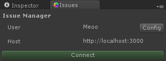

Navigation
Client setup guide
This page will guide you into integrating MwIssues into your existing project.
The MwIssues server must be installed, or you will not be able to use this extension. To install the server, please consult .
The server is free and open source, you can install it before purchasing the editor extension.
Project setup
First, import the package in your project.
All the assets and scripts are located in the MwIssues folder. It is not recommended to move this folder. If you really want to move it, please update the MwIssues/Editor/ConfigEditor script with the new base path.
Once you have imported the extension, open the following asset in your Inspector.
Assets/MwIssues/Config.asset

While the project settings are shared to everyone using the project, the user settings are saved locally, please read the User settings guide for more informations.
Enter the URL of your server in the Server Host field, and hit the Reload button to make sure the changes are registered.
In order to test your configuration, you should also enter a valid user name and API key.
Now, you can open the Issue Manager from Unity's menu bar:
Window > Issue Manager
Press the connect button, and if everything is correctly configured the main interface should appear.
If you get an error message, please consult the Troubleshooting page.
Reporter setup
If you want your play tester to be able to report issues from within the game, you have to use the MwIssues/Reporter prefab.
First, drag and drop it in your scene.
Reporter script
The Reporter script is the main script controlling the behaviour of the reporter.
- Mw Issues Config: Config script, containing the server URL. It points to
MwIssues/Configby default and should not be changed. - Show Report Button: Check this box if you want your users to be able to report issues by clicking on a button on screen.
- Report Key: Choose a key that, when pressed, will start a report. Set to None to disable.
- Escape Key: Choose a key that, when pressed, will cancel the current report. Set to None to disable.
- Report Camera: Camera that will be used to take the screenshots. If unset, it will automatically select the main camera.
- Username Env Var: Select the user name of the reporter from this environment variable. Use the next parameter to override.
- Username Override: If set, the previous parameter is ignored and the value of this field is used for the user name.
- Apikey Env Var: Select the API key from this environment variable. Use the next parameter to override.
- Apikey Override: If set, the previous parameter is ignored and the value of this field is used for the API key.
- Use Mouse Position: If checked, the mouse position is used to trace the issue when the Report Key is pressed.
- Use Physics Raycast: If checked, a physics raycast is performed instead of a graphic raycast.
- Raycast Layer Mask: Mask used by the physics raycast when enabled.
- State: State of the issues created from the reporter.
- Force Category: If checked, the user cannot select a category in the reporter.
- Forced Category: If the previous parameter is checked, issues created from the reporter will have this category.
- Screeshot Mode: Select between allow the user to choose and always enable or disable the screenshot.
User name and API keys can be set using an environment variable, allowing you to have multiple play testers with different report name without having to build a new version of the game for each one.
USERNAME is Windows' variable for the actual user, and USER can be used on unix systems.
For testing purposes, we recommend using the Username Override and Apikey Override parameters.
Please note that some platforms, such as Android, do not work well with environment variables. In that case, you should use the Override parameters, they can also be filled programmatically from another script.
By default, MwIssues is using a graphic raycast to check where in the world the user clicked. This raycast uses the depth buffer, and may not work on every platform, in that case the physics raycast is automatically used as a fallback.
Timescale pause script
This script pauses the game when the reporter is opened by setting the timescale to zero.
This is a very simple script, and you can easily create your own pause system by copying and editing this script.
Version in description script
This script adds automatically to the description of the issue the most common version numbers.
This is also a very simple script, and you can edit it to automatically add any other information to the issues reported.
Edit the reporter interface

The reporter interface is a Canvas that can be modified to fit your needs.
For example, if the report button overlap with another UI element, you can move it: Reporter > Canvas > Picker Button.
In the picture above, the Canvas Scaler has been configured to work with a small screen.